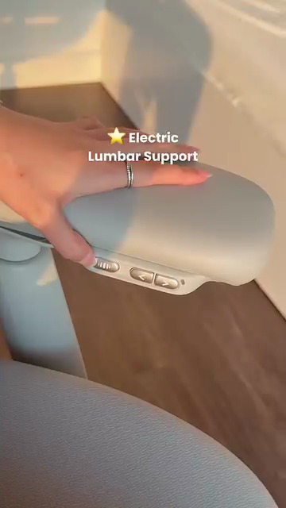
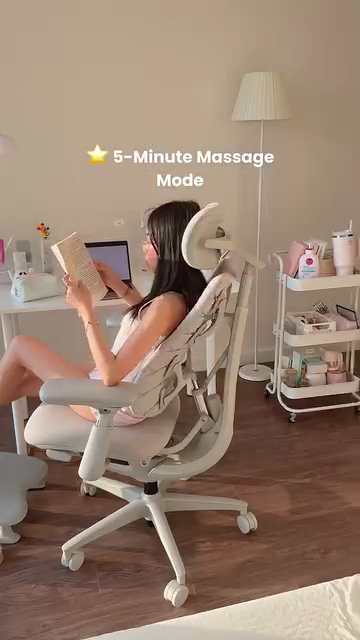
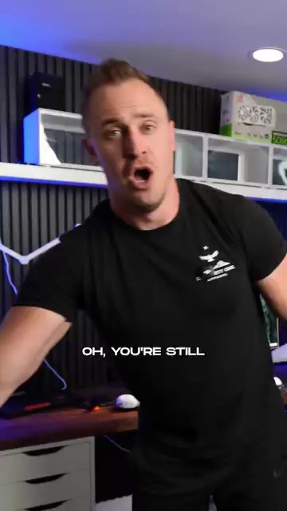
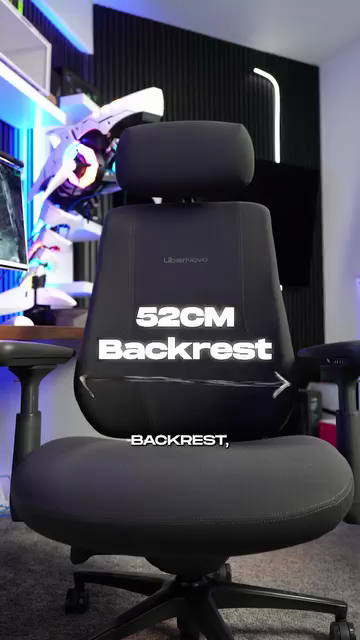
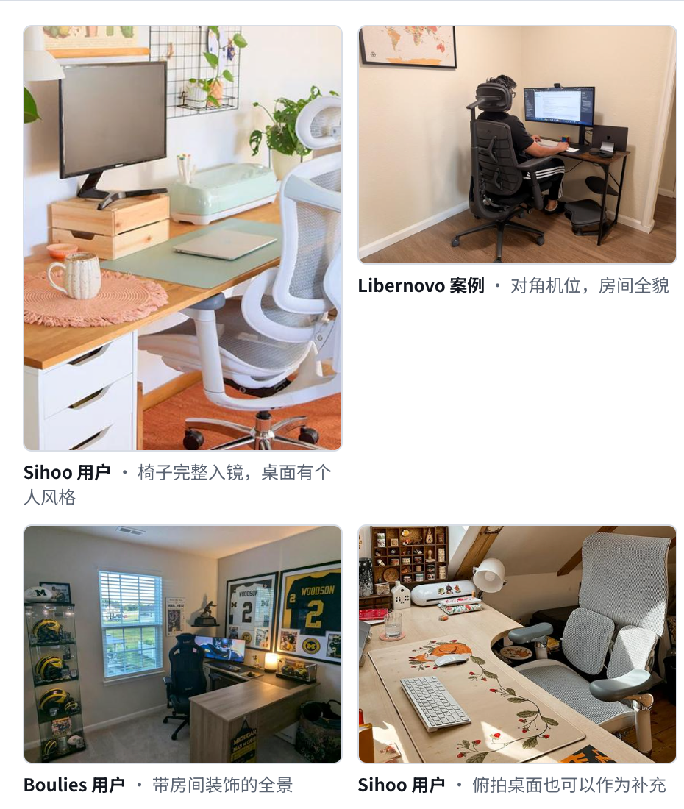
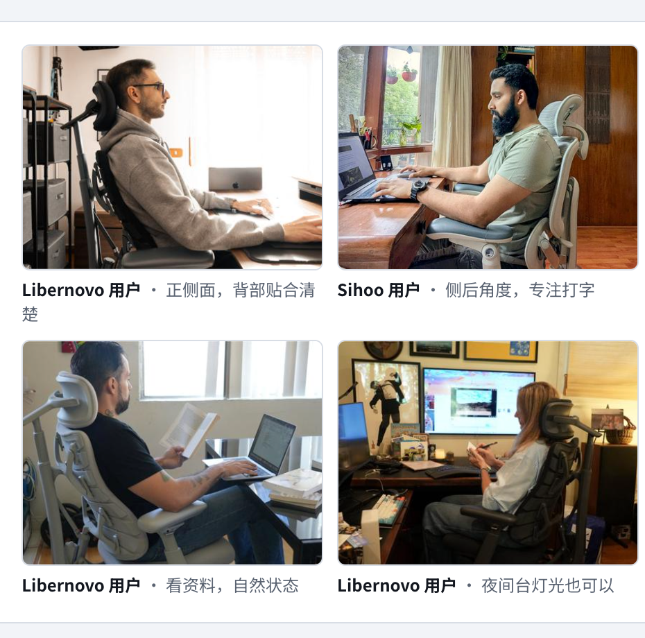
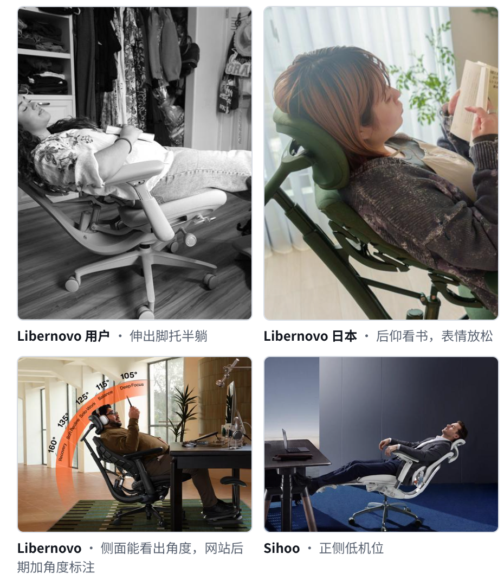
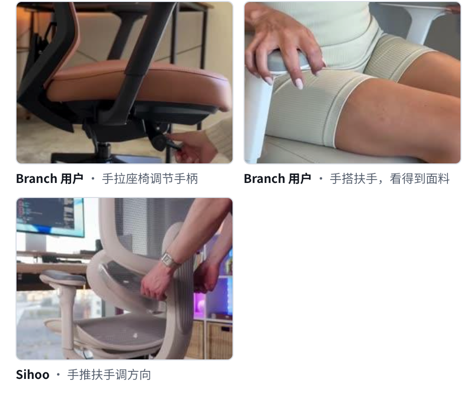
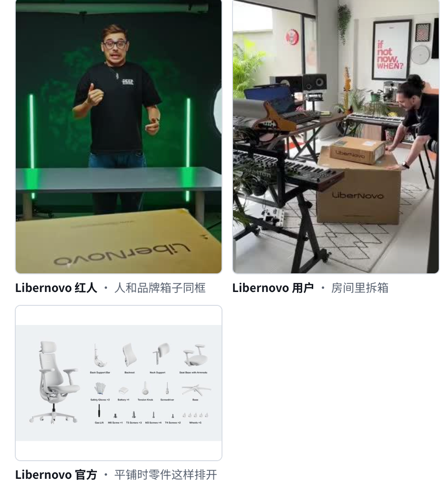

00:00–00:03 · STEP 01
人物与椅子一起出现
SHOOT 必拍
选择一个开头：A人物在桌前真实工作，整椅和房间一起入镜；B本人靠近镜头自然说需求，再展示椅子；C第一帧直接操作真实调节，马上接人物使用结果。前3秒完成切入，不以长开箱开场。
SAY 示例
“POV: your workday just got an upgrade.”
场景版开头：我的工作日，也迎来了一次升级。
真实工作场景、清晰功能演示、人物与产品返图。拍摄素材用于品牌广告投放和独立站建设。
寻找能把产品使用过程拍清楚、口播自然、具备真实居家办公或桌面场景的创作者。选人以内容质量和素材适用性为主，曝光量、点赞量和互动量不作为本项目交付要求。
品牌名称、型号、最终卖点和使用说明补齐后，将此展示稿转为对应国家语言的正式红人 brief。以下台词为英文示例，日本合作另做日语本地化。
官网5张照片按K1–K5分别竖拍4:5，K4可1:1。若网页另需横版，额外补拍，不用横版替代规定照片。账号发布是否需要、发布时间及最终审批路径按合作约定执行。
两条本地清闲广告已经核对：第一条以“pov: you’re living in 2050”的屏幕字幕及真实桌搭场景开场；第二条以人物直面镜头、游戏椅话题开场，再用操作、尺寸标注和后仰展示功能。本脚本采用相应的两类表现方式，功能和参数以本品牌为准。



我们要求：先拍整洁真实工作空间，人物和整椅同框；功能段给手部操作特写，紧接人物实际使用结果；补拍阅读或休息，与K1、K2、K3照片同步规划。



我们要求：直接说一个真实工作需求；讲尺寸就拍测量或明确标注部位；固定侧面机位完整拍后仰，再回到工作。适用体型、角度和尺寸只用品牌核实信息。
每个卖点都拍三段：手部操作 → 功能部位 → 人物使用结果。不要只拍美观产品而没有动作，也不要只说感受而没有对应画面。
画面取自用户提供的清闲1.mp4、清闲2.mp4，仅用于研究与构图参考；时间点见Kick off逐段拆解。电动支撑、按摩、通风、联动等竞品功能，只有本产品真实具备时才列入必拍。
结合两条参考片，分别拍场景、直接出镜和立即操作三种开头。主视频选择一个，另外两个独立返回，便于广告测试。以下为本品牌原创台词，不复用竞品“世界第一”或嘲讽式表达。
| 方向 | 示例台词与画面 |
|---|---|
| A 桌面升级 | “POV: your workday just got an upgrade.” 我的工作日，也迎来了一次升级。像参考片一一样让人物、房间和整椅同框，先呈现真实使用状态。 |
| B 直接出镜 | “My chair is the part of my setup I use the most. Here’s what I changed.” 椅子是我这套桌搭里用得最多的部分，这是我的升级。像参考片二一样直面镜头，但不贬低其他产品。 |
| C 立即操作 | “Watch these two adjustments before I start work.” 开始工作前，看看这两个调节。第一帧直接拍操作，接侧面人物与使用结果。 |
主题：我的工作空间升级。下方为60秒版本；成片30–60秒。前3秒先展示需求或动作，不开参数清单。SHOOT规定拍摄画面，SAY为表达示例。两项功能以品牌确认信息替换。
选择一个开头：A人物在桌前真实工作，整椅和房间一起入镜；B本人靠近镜头自然说需求，再展示椅子；C第一帧直接操作真实调节，马上接人物使用结果。前3秒完成切入，不以长开箱开场。
“POV: your workday just got an upgrade.”
场景版开头：我的工作日，也迎来了一次升级。
打字、剪辑或游戏的真实中景；手、上身和椅子都能看到。切回人物，介绍正式品牌和型号。组装完成的整椅拍一条3秒稳定镜头。
“This is the [Brand] [Model]. I use this space for [my real work], so I wanted a chair I could set up for the way I work.”
替换为正式名称和真实工作内容，不编造使用时长。
拍品牌选定的第一项功能，按“操作→部位→人物结果”三段返回。参考片一16秒的按钮近景和21秒的工作姿势。若为坐高或扶手，拍清手部、实际部位及调整后手肘与桌面关系。正常速度留完整操作。
“First, I adjust [the confirmed control]. Here’s how it changes the way I sit at my desk.”
具体命名功能，说明画面看得到的变化；不把可调性说成医疗效果。
拍品牌确认的第二项卖点。支撑方向使用固定侧面机位，展示腰背与椅背关系；可调功能拍操作前后。若卖点不是支撑，改拍对应结构及实际使用，不强塞腰托说法。
“The feature I wanted to try was [confirmed feature]. You can see [the visible action or adjustment] here.”
补充一条真实体验感受，并交付完整侧面动作原片。
若支持后仰，参考片二约31–34秒，固定侧面机位完整拍坐下、操作、后仰和回到工作。另为每个真实档位留2–3秒稳定画面，完整拍到人物、椅背与底座。若不支持后仰，改拍另一种实际工作任务和坐姿调整。
“When I take a break, I [describe the adjustment shown]. Then I reset it for work.”
只讲产品真实允许的动作，角度和配件以本型号为准。
完整工作空间、人物自然工作、整椅斜侧和背面、面料或结构特写。关键工作场景再横拍一遍，画面一侧留出标题空间。
“Here’s how it looks in my workspace. My favorite detail so far is [a genuine observation].”
感受来自实际体验，颜色与材质名称来自品牌资料。
人物与整椅同框，简短总结两项真实喜欢的细节。留2秒稳定画面，另拍一遍无CTA结尾，方便广告和官网复用。
“For my setup, the details that matter most are [detail one] and [detail two]. That’s how I’m using it in my workday.”
网站尚未上线，不预写购买链接或折扣。公开发布的结尾另按品牌准备情况确认。
每位红人固定交付5张照片，每个编号各1张。照片4:5，至少1080×1350；K4可用1:1。返高清原图，不加滤镜、水印和广告字，不以视频截图代替。独立站在用户墙、评价区、功能模块和安装说明中分别使用。
4:5 · 1张｜首页用户墙、集合页、案例页
怎么拍：站在房间对角，镜头约120–140cm高，略向下拍；从正面或30–45°斜角取景。椅子完整入镜，占画面约1/3到1/2；桌面、显示器和房间背景一起入镜。可有人自然坐着，也可拍空椅。
自然光优先。桌面保持整洁，可保留键盘、植物、杯子等日常物件。
避免：不只拍椅背上半截，不让广角把椅子拉变形，不带入其他品牌椅子。

4:5 · 1张｜详情页评价区、适配说明
怎么拍：侧面或侧后30°，镜头与座面同高，约60–80cm。人物从头到脚完整入镜，腰背与椅背接触可见；自然打字、剪辑、画画或游戏，不看镜头。双脚平放、手臂置于扶手。
交付时附红人实际身高、体重与使用的座椅档位，供官网适配说明使用。
避免：不正面拍，不驼背或跷二郎腿；避免宽松外套挡住腰背线条。

4:5 · 1张｜详情页后仰模块、广告
怎么拍：正侧面，镜头约50–60cm，略低于座面。按产品说明调到允许的最大后仰档位；有脚托则展开使用。人物和椅子完整入镜，保留靠背后仰空间；自然看书、看手机或闭眼短暂休息。
只能展示该型号实际支持的角度和配件，不能照搬示例椅子的参数。
避免：不要只拍半躺但无法看出角度；不从腰部截断人物，不让墙面遮挡椅背。

4:5 或 1:1 · 1张｜详情页功能模块、评价配图
怎么拍：选一个实际可用的调节：腰托按钮、扶手、座下把手、头枕或面料触感。手与操作部件近距离同框，主体占画面1/2以上；侧面窗光照出材质纹理。
目的不是拍空产品特写，而是让人一眼知道哪里可以调、怎么用。
避免：不拍成远景；不要让手上的首饰或夸张美甲抢走主体注意力。

4:5 · 1张｜包装清单、安装教程、FAQ
怎么拍：二选一：打开箱子，把零件平铺在地板上俯拍；或拍安装椅背、扶手等过程，人物与成品同框。展示全部部件、五金、工具和说明书，箱体品牌标识可见。
安装动作按品牌说明执行，不把竞品部件或包装标识用于本品牌返图。
避免：不拍杂乱零件堆，不只拍一个大箱子；整理到买家能看清收到什么。

5张照片须分别拍摄，不能由同一张裁切凑数。尺寸以上述运营brief为最低要求，能提供更高清原图则优先。横图为额外官网适配素材，不能替代这5张4:5照片。
图示来自用户提供的Claude文档截图，已逐项读取。示例包含不同竞品，只参考机位、构图与氛围，不要求复刻品牌标识或不具备的功能。